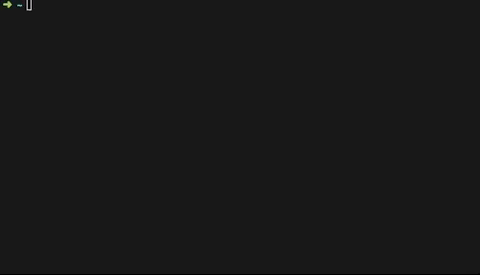

.bash_profile가 존재 하지 않을 경우, 만들어 준다.1$ vi ~/.bash_profile
.bash_profile
1
$ vi ~/.bash_profile
bash_profile에 원하는 command를 입력해준다.
bash_profile
terminal 열기 또는 source .bash_profile를 통하여 테스트 해본다.

.bashrc 이외에 .bash_profile, profile, /etc/bashrc 등이 추가로 있다. 해당 파일의 기본 설정 호출 순서는 다음과 같다.
.bashrc
profile
/etc/bashrc